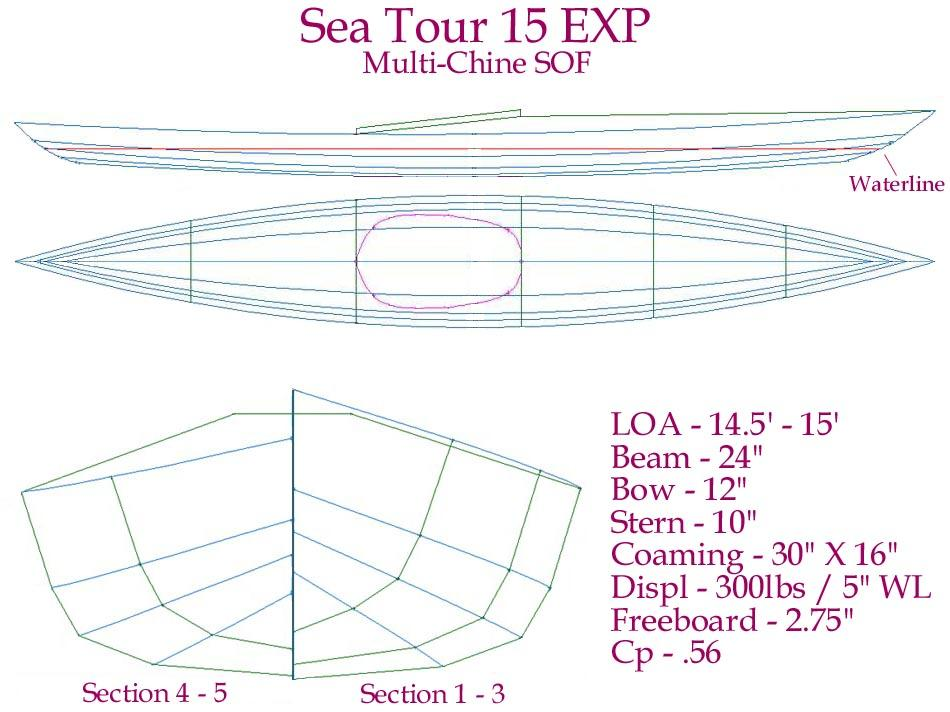

| Sea Tour 15 EXP | Menu Last Page Next Page |
|

The Sea Tour EXP ( Expedition) 15', 17', and 20' (Double), are multi-chine touring kayaks with greater displacement and gear storage capability than the Sea Tour single - chine designs. Compared to the Sea Tour's, they are wider and taller. The 15' and 17' singles have a flat aft deck configuration. The double has a full length peaked deck. All EXP's can be constructed as wood frame SOF, Aluminum frame folding SOF, or woodstrip construction.
|
|